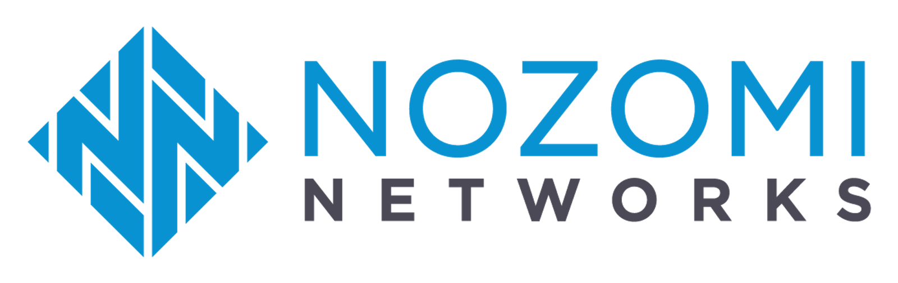
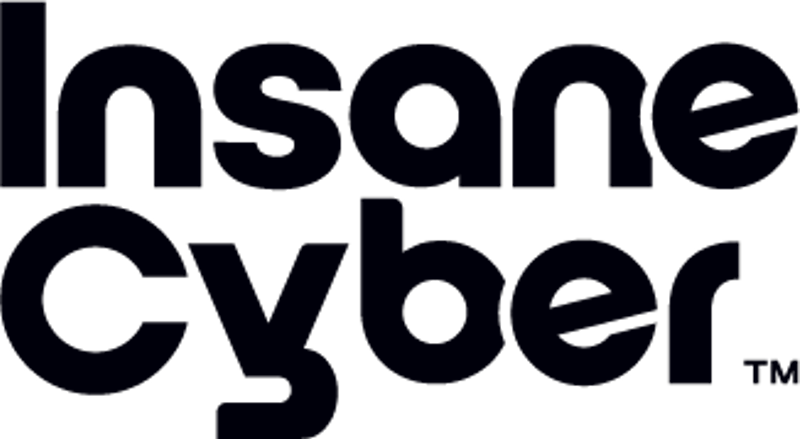

Today we’re launching the Anthropic Cyber Mission, a long-term commitment to securing the systems everyone depends on. The Cyber Mission is a new effort to support defenders with tools, research, and resources to secure their software and systems. We’re starting with two areas:
- Critical infrastructure: Starting with securing the operational technology behind power grids, water systems, and transportation networks, and protecting government systems. Today, we’re introducing the Critical Infrastructure Defense Program (CIDP), which brings frontier models, on-site engineers, and threat research to the defenders that protect operational technology.
- Open-source software: Finding vulnerabilities and proposing patches in the free, shared code that most software depends on, and hardening the underlying code. Today, we’re launching OSS Scanner, which offers open-source projects regular security scans from our strongest models, for free.
Frontier models can be misused to exploit vulnerabilities and conduct cyber operations. Despite best efforts, many areas of technology remain dangerously exposed. State-sponsored adversaries have spent years gaining footholds in these systems, across many sectors, so that they can disrupt them. Defenders of critical infrastructure and the OSS community have decades of security experience but have faced severe resource shortages that are exacerbated by this moment. We are recognizing their expertise in these domains and offering our support. We will also expand the Cyber Mission to release tools, research, and resources in new areas to help secure the world.
As part of Project Glasswing, partners uncovered many vulnerabilities, but we haven’t yet achieved a sufficient reduction in cyber risk. It’s easier than ever to find vulnerabilities, but verifying, prioritizing, and fixing these findings remains challenging. Based on lessons from Project Glasswing, we’re starting these new efforts to support defenders. Earlier this week, we merged Project Glasswing into our expanded Cyber Verification Program, which gives many more defenders access to our most capable models. And through the Anthropic Cyber Mission, we’ll deploy Anthropic engineering talent and provide tools and funding for those who secure critical infrastructure and open-source software.
Defending critical infrastructure
Power grids, water utilities, factories, and transportation networks run on controllers, control software, and industrial networks built to last for decades. These systems are known as “operational technology,” and they often cannot be taken offline to patch, so known vulnerabilities can stay unresolved for years. Securing them is specialized work: the equipment is proprietary, changes are risky, and a mistake can take down a plant. Operators of every size rely on a small set of trusted providers to support that work, telling them what’s exposed and which fixes to make on a running system.
Today, we’re introducing the Critical Infrastructure Defense Program, which brings frontier Claude models, on-site engineers, and our threat research to those trusted providers. Its founding partners are Accenture, Booz Allen, CrowdStrike, Deloitte, Dragos, Hitachi, Insane Cyber, Nozomi Networks, Palo Alto Networks, PwC, and Rockwell Automation.
These organizations represent the providers that operators rely on to secure these systems: the consulting and advanced technology companies that run security programs, the security companies that guard the business and industrial networks, and the manufacturers that build and patch the equipment itself.
This work is underway. Several partners are currently working with Claude to fix vulnerabilities and help customers do the same. Critical infrastructure is hard to defend in many ways that AI cannot fix, but we believe that frontier models can help find and repair weaknesses before those weaknesses are used to cut off power or make water unsafe. Our first step is to work with a small cohort of providers to learn which strategies are most effective and practical.
If your company builds security products or services for critical infrastructure, you can register your interest here.
As AI continues to advance, it presents an important opportunity to strengthen cybersecurity across critical infrastructure, provided it is applied responsibly, validated rigorously, and deployed with safety and reliability at the forefront. We are pleased to contribute our operational technology and industrial cybersecurity expertise to help develop practical approaches for applying AI in ways that strengthen the resilience of the infrastructure society depends on every day.Tony Baker VP, Digital Trust & Chief Product Security Officer, Rockwell Automation
Through our work with critical infrastructure organizations, PwC’s cyber OT practice has seen firsthand the gravity of consequences cyber breaches can have in these environments. I firmly believe that a coordinated, industry-wide effort is necessary to identify vulnerabilities, mitigate risks, and strengthen the resilience of our critical systems.Harshul Joshi Partner, US OT/ICS Security Lead, Cyber Data and Tech Risk, PwC
Threat actors are using AI to find and exploit exposures at machine speed. By combining Unit 42 threat intelligence and operational expertise with Anthropic’s frontier models, we’re helping operators defend against adversaries looking to attack and disrupt essential services. Together, we are giving defenders the speed and precision needed to close attack paths before exposure becomes impact.Sam Rubin Senior Vice President, Unit 42, Palo Alto Networks

Frontier AI is evolving faster than any single organization can track alone. That’s why the Critical Infrastructure Defense Program matters. It brings together the people who understand these environments with the frontier capabilities now available to defend them. We’re proud to contribute our experience and to learn alongside the other partners working to protect the systems the world depends on.Moreno Carullo Co-Founder and CTO, Nozomi Networks

The sites that need protection most, like remote substations, offshore platforms, and air-gapped plants, are exactly where traditional tools can’t reach and specialists can’t be. What no one had solved was the hours: more data than any team can work through, at more sites than any team can staff. Claude closes that gap, so our analysts and our customers’ operators spend their time on the judgment calls that keep critical systems running safely.Dan Gunter CEO and Founder, Insane Cyber
Critical infrastructure and the people who depend on it benefit when the vendor community shares what they learn about the opportunities and challenges that AI presents to operational environments, rather than keeping that knowledge in silos. Joining Anthropic's Critical Infrastructure Defense Program is one of the ways we help align frontier AI to a collective defense strategy built around the realities of the operational technology (OT) that keeps the lights on, water safe, and transportation running.Jon Lavender Chief Technology Officer, Dragos
Critical infrastructure is where cyber risk becomes real-world risk. As adversaries use AI to move faster and operate at greater scale, critical infrastructure facing machine-speed threats requires machine-speed defense. By bringing CrowdStrike’s deep security context and expertise together with Anthropic’s frontier AI expertise, we can put a greater advantage in the hands of critical infrastructure defenders.Daniel Bernard Chief Business Officer, CrowdStrike
Amid the rapid evolution of AI and the increasing sophistication and speed of cyber threats, ensuring cybersecurity in OT environments that support social infrastructure has become one of the highest priorities facing society today. Through participation in this program, we look forward to collaborating with Anthropic and fellow partners to further enhance cyber resilience for critical infrastructure.Hiroaki Koiwa Head of Cyber CoE, AI & Software Services Business Unit, Hitachi, Ltd.
As AI accelerates, critical infrastructure operators need solutions that address security vulnerabilities at machine speed. Together with Anthropic, Deloitte is helping provide these enterprises with the enablement needed to close security gaps and strengthen resilience, moving at pace with the realities of frontier AI.Adnan Amjad US Cyber Leader, Deloitte & Touche LLP
Operational technology is the next frontier for autonomous AI-enabled attacks. The question is no longer whether AI can affect an industrial process, but how much control it can gain, and how quickly. The Critical Infrastructure Defense Program is convening the best of private-sector innovation and investment to strengthen OT and ICS resilience across federal and commercial missions.Andrew Turner President of Commercial Cyber, Booz Allen
Organizations that keep our power on, medicine safe, food supply secure, and communications running face some of the most consequential cyber risks in the world. Accenture is committed to bringing our deep OT security expertise to the organizations that protect the critical infrastructure communities depend on every day. This partnership will help put AI-powered defense in the hands of those who need it most.Harpreet Sidhu Global Cybersecurity Lead, Accenture
01 / 11
In June, we launched a cyber defense program for state, local, tribal, and territorial governments. Since then, we’ve offered frontier Claude models and technical support to more than half of all US states and some of the country’s largest public critical infrastructure operators, speeding up code scanning and patching, incident response, red teaming, and other security workflows.
We are listening to and learning from the people who know this landscape best. Our approach is to work with the companies, coalitions, governments, and nonprofits that know this landscape and that operators trust, and provide support where it’s most needed.
Securing open-source software
Almost all software relies on open-source code, much of it maintained by small teams of volunteers. Under Project Glasswing, we scanned hundreds of widely used open-source projects, had humans triage and review many of the potential vulnerabilities uncovered, and privately reported what we found to their maintainers through our coordinated vulnerability disclosure process.
Some maintainers with the capacity to triage at scale asked us for everything our models had found in their project, reviewed or not. In response, we’re launching OSS Scanner, an opt-in service inspired by Google’s OSS-Fuzz. Enrolled projects receive periodic scans from our most capable models, free of charge. Each report includes a proof of concept of how the bug could be exploited, an explanation, and a suggested fix where one is available. The reports are model-generated and sent without human review. That means maintainers receive them faster, but it also means that some will contain inaccuracies, such as a wrong severity rating. We expect a true-positive rate above 90%, and will work to improve the true positive rate and fix quality over time. The team’s post explains how it works and how to enroll.
The service is meant for projects with the capacity to keep up with surfaced findings. For others, we will continue to share human-verified disclosures under our CVD policy.
OSS Scanner is a first step. From here, our open-source work aims to:
- Get findings to maintainers faster. Bring OSS Scanner to more projects while keeping human-verified disclosure for those that need it.
- Accelerate fixes. Automate triage and patching, which are still mostly manual, for projects that want it.
- Explore new secure architectures and coding practices. Research and share methods for hardening or rewriting code with projects that want to go further than patching.
We’ll do this based on guidance from open-source maintainers and foundations, and share what works so other projects can replicate it. We funded the organizations behind widely used open-source code, including the Python Software Foundation, Alpha-Omega and OpenSSF through the Linux Foundation, and the Apache Software Foundation, as well as supporting Akrites and Gold Eagle, which collect and coordinate vulnerability reports from many sources to avoid overwhelming maintainers. The Defender Advantage Fund (0xDAF), which we launched in August, supports pilot programs in these areas and keeps OSS Scanner free.
Maintainers can also apply to Claude for Open Source for free Claude Max subscriptions, and to the Cyber Verification Program for expanded access to Claude’s cyber capabilities for defensive work.
Why we're doing this
Highly cyber-capable AI models are widely available to attackers now. But defensive tools—including our own—have not yet reached enough of the defenders who need them. OSS Scanner, our Cyber Verification Program, defensive products our partners build on our platform, and Claude Security are some of our efforts here, and we’ll be adding others as soon as possible.
Our forecast is that in two years, AI will favor defense: it will be easier to catch bugs before they ship, write fundamentally secure software from scratch, and actively defend systems with models. But in the near term, that may not be true. The cost of exploiting vulnerabilities has dropped, while verifying, disclosing, and fixing them is slow and still depends on people. In Glasswing, we often saw months pass between a vulnerability being found and being fixed. With operational technology, a fix may have to wait until it can be applied safely to running machinery—in some rare cases, this might take decades.
Success means critical infrastructure such as water, power, transport, and communications keep running in the face of attacks by capable adversaries, with fewer exploitable paths in and faster recovery when something gets through. This will take years and we expect the Anthropic Cyber Mission to change as we, together with the public and private sector, learn what works.
The path ahead
Over the coming months, we’ll bring the Critical Infrastructure Defense Program to more partners and more sectors, and we’ll share what we learn along the way, including what didn’t work. We also expect other AI developers, security companies, and governments to run efforts of their own, and we’d like to collaborate with them wherever that helps defenders.
We will also expand our work to help secure open source and the broader supply chain. This includes researching new ways of writing software and new ways of defending systems. We intend to share frontier research, tools, and resources to help others secure their software and supply chain.
If you’d like to work with us:
- Companies that build security products or services for critical infrastructure, including security vendors, system integrators, and equipment manufacturers, can register their interest in the Critical Infrastructure Defense Program as we expand it.
- Core maintainers of critical open-source projects can enroll in OSS Scanner.
- Security teams of any size, including operators of critical infrastructure and open-source maintainers, can apply to our expanded Cyber Verification Program for access to our models.